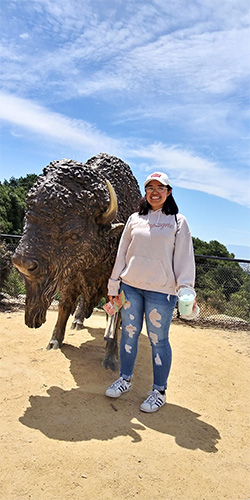

About Me
My name is Mayra Lares and I am a freshman in San Jose State University.
My major is Digital Media Art. I'm 18 years old and have liked anything related
to art since I was in elementary school. My interest for art began by watching
Bob Ross on television. I loved watching him paint as the camera zoomed in on
the canvas. Watching him paint was when I realized that painting is really just
a bunch of colors put together in certain places to create an image when you take
a step back to observe the whole picture. From then, my art journey began with
tracing images from coloring books and by using tracing paper. I took my first
art class in middle school and continued to take it in school until I got to college.
I am a person that tends to over think pretty much everything and up until a few
months ago, greatly disliked the color pink, and anything that gave off a girl-girl
vibe. However, now it seems like I am just that. However, I like to look at it from
a different light: I like aesthetically pleasing things and it just so happens that the
most aesthetic things are usually some type of pink. I love all colors of the rainbow
and don't mind being alone! :)
